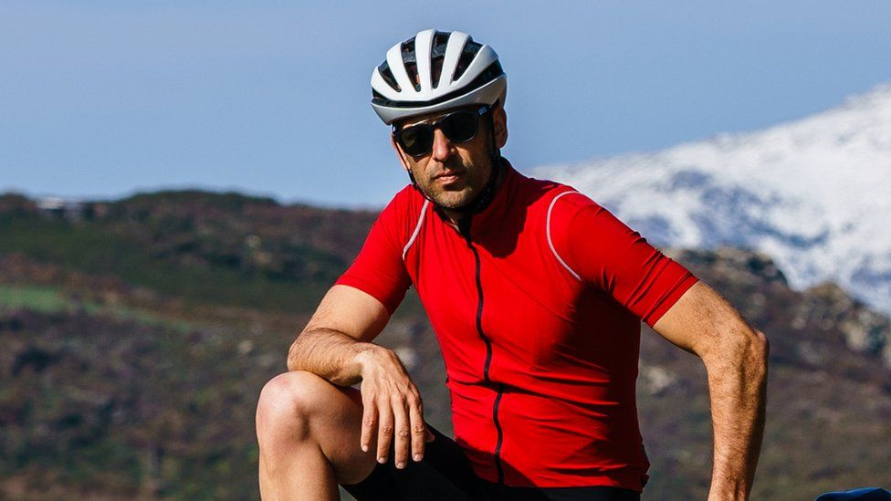
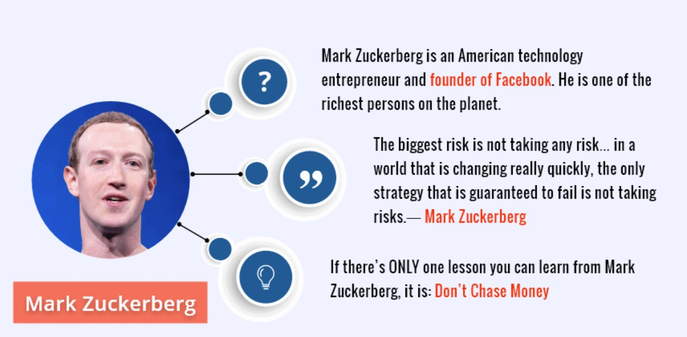
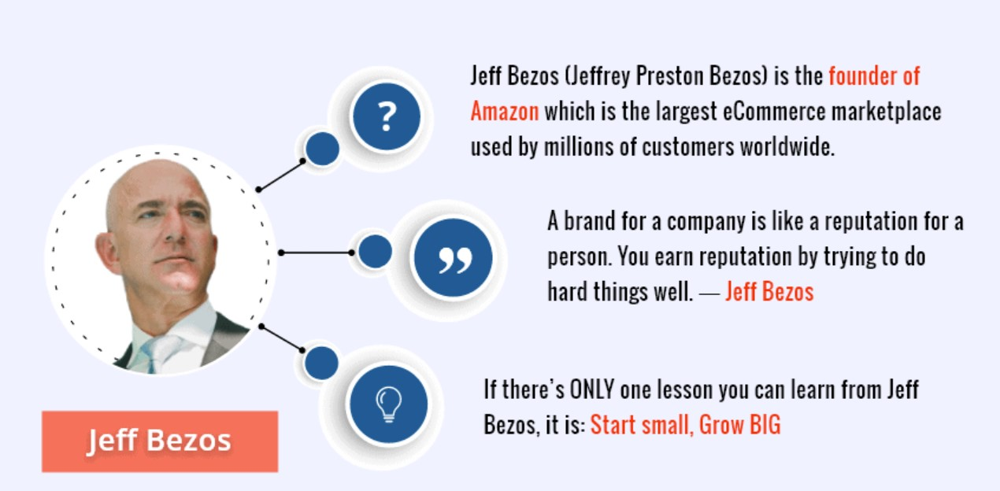
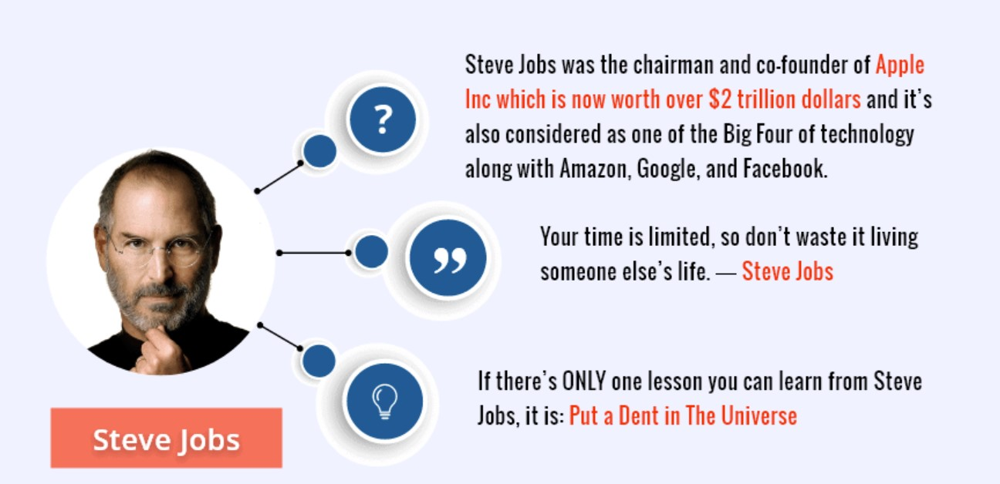

Latest Sucess of Entrepreneurs
Remi Clermont
When Remi Clermont was a teenager, he was embarrassed that his father liked going road cycling. By road cycling, he means riding around on the type of bike you see in the Tour de France - "drop handlebars" that sweep downwards, and thin tyres.Despite Remi being born and raised in the Alsace region of eastern France, and road biking being one of the country's most popular sports, his young self just didn't like it."My friends and I, all the kids, were into mountain biking at the time (the early 1990s)," says the 44-year-old. "Road biking was seen as very boring. I was almost ashamed when I told friends that my dad was into it."Jules Miller
Jules Miller says she became so ill that she had internal bleeding. "I was exhausted, bloated, I wasn't living a normal life anymore. That's when I started to think about food, wellness and supplements."This was back in 2015. Living a stressful life in London, Jules, then aged 25, had been diagnosed with irritable bowel syndrome (IBS). She started taking supplements to try to alleviate the problem, but found that nothing worked. She says that some even made her feel worse, and she was alarmed that most of the pills she tried were full of fillers and bulking agents.Garrett Gee
Garrett Gee turned a lucky guess into a business opportunity when the iPad 2 was about to come out.9 Then a university student, Garrett guessed that once the iPad 2 came out, there would soon be a blog post somewhere listing the top 10 apps for the device. After recognizing there should be easier to use and less clunky QR code software and apps, he made it his mission to be the first one to offer such a product fit for the iPad 2.He quickly got the iPad 2 into the hands of his iOS developer, and after two sleepless nights, he had accomplished his goal. His guess about the blog post was also correct. Thanks to his hard work, he made it onto that list. He recruited two classmates to launch Scan in Feb. 2011. After being rejected by Shark Tank venture capitalists, Scan secured $7 million of financing from Entree.10 In 2014, Gee sold Scan to Snapchat for $54 million.TOP Entrepreneurs
1 / 9

Mark Zuckerberg
2 / 9

Jeff Bezos
3 / 9

Steve Jobs
4 / 9

Ritesh Agarwal
5 / 9

Larry Ellison
6 / 9

Vijay Shekhar Sharma
7 / 9

Larry Page And Sergey Brin
8 / 9

Elon Musk
9 / 9

Bill Gates